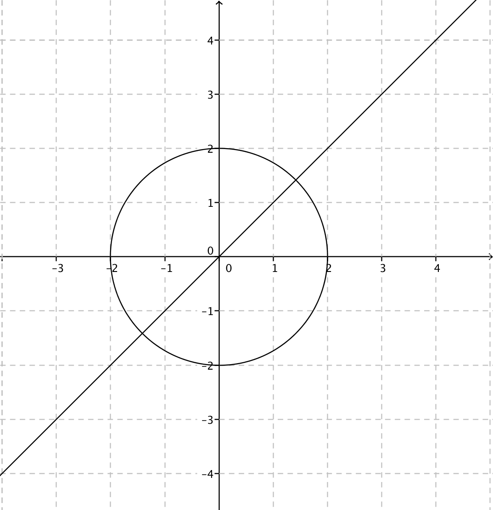
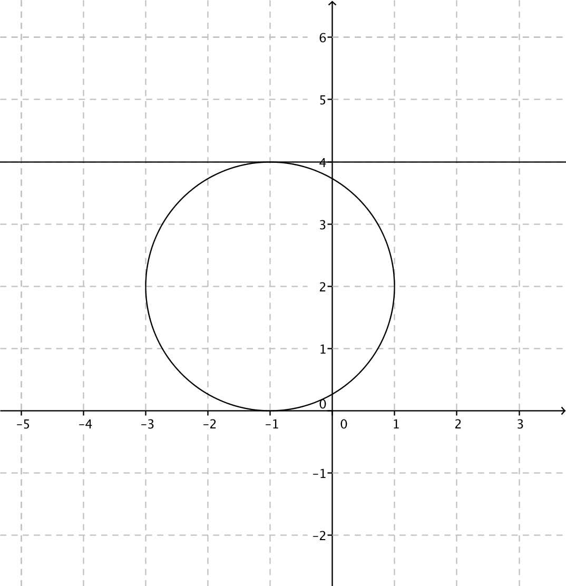
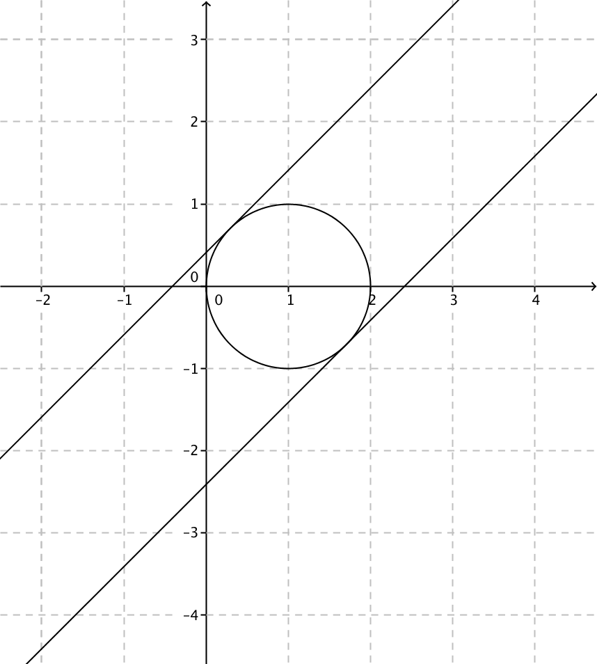

13. Skärningspunkter för cirkel och linje
Bestäm skärningspunkterna för linjen \( y=x \) och cirkeln \( x^2+y^2=4 \).
Lösning
Situationen är följande:

Vi löser ekvationssystemet
\( \left\{ \begin{array}{rcl} y & = & x \\ x^2+y^2 & = & 4 \\ \end{array} \right. \)
Vi ersätter \( y \) med \( x \) i den andra ekvationen och får
\( \begin{array}{rcl} x^2+x^2 & = & 4 \\ 2x^2 & = & 4 \\ x^2 & = & 2 \\ x & = & \pm \sqrt{2}\\ \end{array} \)
Eftersom \( y=x \) så är skärningspunkterna \( (\sqrt{2},\sqrt{2}) \) och \( (\sqrt{2},-\sqrt{2}) \).
Lösning
Sitationen är följande:

Vi bildar ekvationssystemet
\( \left\{ \begin{array}{rcll} (x+1)^2+(y-2)^2 & = & 4 & (1.) \\ y & = & 4 & (2.)\\ \end{array} \right. \)
Vi sätter in ekvation (2.) i (1.) och får
\( \begin{array}{rcl}(x+1)^2+(4-2)^2 & = & 4 \\x^2+2x+1+4 & = & 4 \\x^2+2x+1 & = & 0 \\(x+1)^2 & = & 0 \\x+1 & = & 0 \\x & = & -1 \\\end{array} \)
Då \( x=-1 \) får vi \( y \) genom insättning,
\( \begin{array}{rcl} (-1+1)^2+(y-2)^2 & = & 4 \\ y^2-4y +4 & = & 4 \\ y^2 -4y & = & 0 \\ y(y-4) & = & 0 \\ y=0 & \vee & y-4=0 \\ & & y=4\\ \end{array} \)
Har vi två tangeringspunkter? \( (-1,0) \) och \( (-1,4) \)? Eftersom vi har linjen \( y=4 \) så gäller punkten \( (-1,4) \) som tangeringspunkt. \( (-1,0) \) är en punkt som linjen går igenom.
Svar: \( (-1,4) \)
Lösning
Sitationen ser ut som följande:

Tangenterna är av typen \( y=x+b \). Det som vi söker är
\( \left\{ \begin{array}{l} y = x+b \\ (x-1)^2+y^2 = 1\\ \end{array} \right. \)
När vi kombinerar får vi
\( \begin{array}{rcl} (x-1)^2+(x+b)^2 & = & 1\\ x^2 -2x+1+x^2+2bx+b^2 & = & 1 \\ 2x^2 -2x+2bx+b^2 & = & 0 \\ 2x^2 + (-2+2b)x+b^2 & = & 0 \\ \end{array} \)
Vi har en andragradsekvation där \( a=2 \), \( b=-2+2b \) och \( c=b^2 \). Vi vill ha endast en gemensam punkt så diskriminanten, \( b^2-4ac =0 \).
\( \begin{array}{rcl} (-2+2b)^2-4\cdot2 \cdot b^2 & = & 0\\ 4 - 8b+4b^2-8b^2 & = & 0\\ -4b^2-8b+4 & = & 0 \quad\mid /(-4)\\ b^2 +2b-1 & = & 0 \\ \end{array} \)
Rotformeln:
\( \begin{array}{rcl} b & = & \dfrac{-2\pm\sqrt{2^2-4\cdot 1\cdot (-1)}}{2\cdot 1}\\ b & = & \dfrac{-2\pm\sqrt{8}}{2} = \dfrac{-2\pm2\sqrt{2}}{2} = -1\pm\sqrt{2}\\ \end{array} \)
Tangenterna är \( y=x-1+\sqrt{2} \) och \( y=x-1-\sqrt{2} \).
Uppgifter
- Repetera cirkeln genom att bestämma \( x \) och \( y \)-koordinaterna för mittpunkten samt radien för följande cirklar genom att avläsa ekvationerna.
Ekvation Mittpunktens koordinater Radie \( x^2+y^2=1 \) \( (x+1)^2+y^2=4 \) \( (x-1)^2+(y+1)^2=4 \) \( x^2+(y-1)^2=9 \) \( (x+1)^2+(y+1)^2=1 \) \( x^2+y^2=9 \) Ekvation Mittpunktens koordinater Radie \( x^2+y^2=1 \) (0,0) 1 \( (x+1)^2+y^2=4 \) (-1,0) 2 \( (x-1)^2+(y+1)^2=4 \) (1,-1) 2 \( x^2+(y-1)^2=9 \) (0,1) 3 \( (x+1)^2+(y+1)^2=1 \) (-1,-1) 1 \( x^2+y^2=9 \) (0,0) 3 - Bestäm skärningspunkterna mellan \( x^2+y^2=5 \) och \( y=x-1 \).
För att hitta skärningspunkterna så löser vi ekvationssystemet
\( \left\{ \begin{array}{l} x^2+y^2 = 5 \\ y= x-1\\ \end{array} \right. \).
Lösningarna är \( (-1,-2) \) och \( (2,1) \).
- Bestäm skärningspunkterna mellan \( (x-1)^2+(y+1)^2=4 \) och \( y=x \).
För att hitta skärningspunkterna så löser vi ekvationssystemet
\( \left\{ \begin{array}{l} (x-1)^2+(y+1)^2=4\\ y=x\\ \end{array} \right. \)
som har lösningarna \( (-1,-1) \) och \( (1,1) \).
- Bestäm tangeringspunkten för cirkeln \( (x-1)^2+(y+4)^2 = 4 \) och \( y=-2 \).
Vi söker de gemensamma punkterna för
\( \left\{ \begin{array}{l} (x-1)^2+(y+4)^2=4\\ y=-2\\ \end{array} \right. \).
Eftersom de endast har en punkt gemensam, \( (1,-2) \) så har vi en tangeringspunkt.
- Bestäm de gemensamma punkterna för \( y=-2x+4 \) och \( (x-3)^2+(y-3)^2=5 \).
Vi löser ekvationssystemet
\( \left\{ \begin{array}{l} y=-2x+4\\ (x-3)^2+(y-3)^2=5\\ \end{array} \right. \)
som har lösningen \( (1,2) \).
- Bestäm de gemensamma punkterna för cirklarna \( (x-3)^2+y^2=4 \) och \( (x-1)^2+(y+2)^2=4 \).
De gemensamma punkterna får vi genom att lösa ekvationssystemet
\( \left\{ \begin{array}{l} (x-3)^2+y^2=4\\ (x-1)^2+(y+2)^2=4\\ \end{array} \right. \)
som har lösningarna \( (1,0) \) och \( (3,-2) \).
- Bestäm tangenterna för cirkeln \( x^2+(y+2)^2=4 \) som vars riktningskoefficient har värdet \( -1 \).
Tangenterna ser ut som \( y=-x+b \). Vi söker de gemensamma punterna för linjerna och cirkeln.
Vi får ekvationssystemet \( \left\{ \begin{array}{l} x^2+(y+2)^2=4\\ y=-x+b\\ \end{array} \right. \).
När vi kombinerar ekvationerna får vi: \( x^2+(-x+b+2)^2=4 \). Den ekvationen skall ha en lösning och då kommer vi åt värdet för \( b=-2\pm2\sqrt{2} \).
Tangenterna är \( y=-x-2\pm2\sqrt{2} \).
- Från punkten \( (-4,2) \) dras tangenterna för cirkeln \( x^2+y^2=4 \). Bestäm tangenternas ekvationer.
Tangenterna ser ut som \( y-2=k(x+4) \). Dessa skall ha en gemensam punkt med cirkeln. Vi får ekvationssystemet
\( \left\{ \begin{array}{l} x^2+y^2=4\\ y-2=k(x+4)\\ \end{array} \right. \)
När vi kombinerar får vi: \( x^2+(k(x+4)+2)^2=4 \) och får \( (k^2+1)x^2+4k(2k+1)x+16k^2+16k=0 \). Den ekvationen skall ha en lösning som betyder att diskriminanten skall ha värdet noll. Och vi får \( k=0 \) och \( k=-\dfrac{4}{3} \).
Tangenterna är \( y=2 \) och \( y=-1\dfrac{1}{3}x-3\dfrac{1}{3} \).
- För vilka värden på \( a \) tangerar cirklarna \( (x-1)^2+y^2=4 \) och \( (x-1)^2+(y+3)^2=a \) varandra?
Vi bildar ett ekvationssystem
\( \left\{ \begin{array}{l} (x-1)^2+y^2=4\\ (x-1)^2+(y+3)^2=a\\ \end{array} \right. \)
Då vi kombinerar ekvationerna bildar diskriminanten och kräver att diskriminanten skall ha värdet 0 får vi att \( a=1 \) eller \( a=25 \).